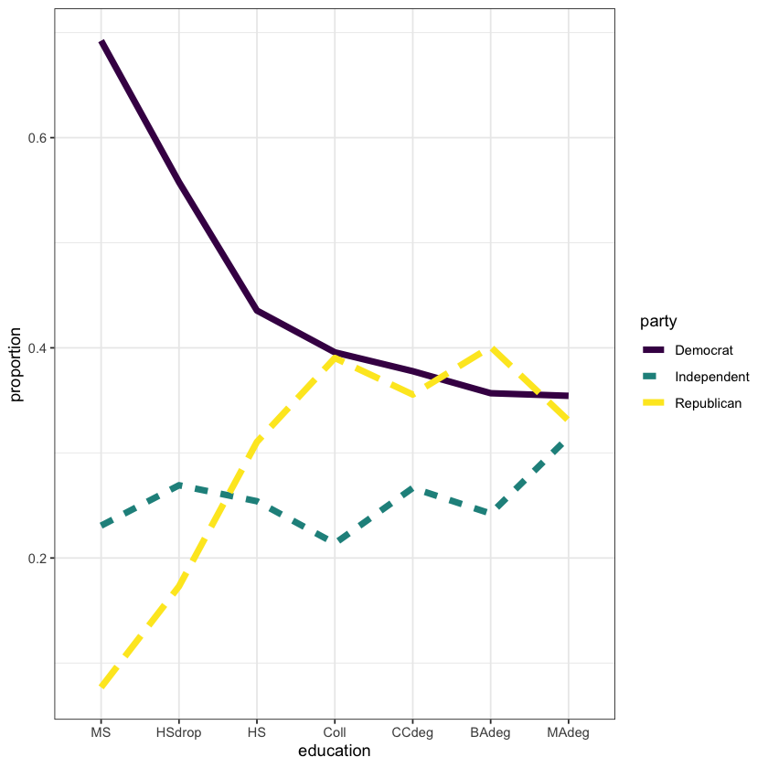
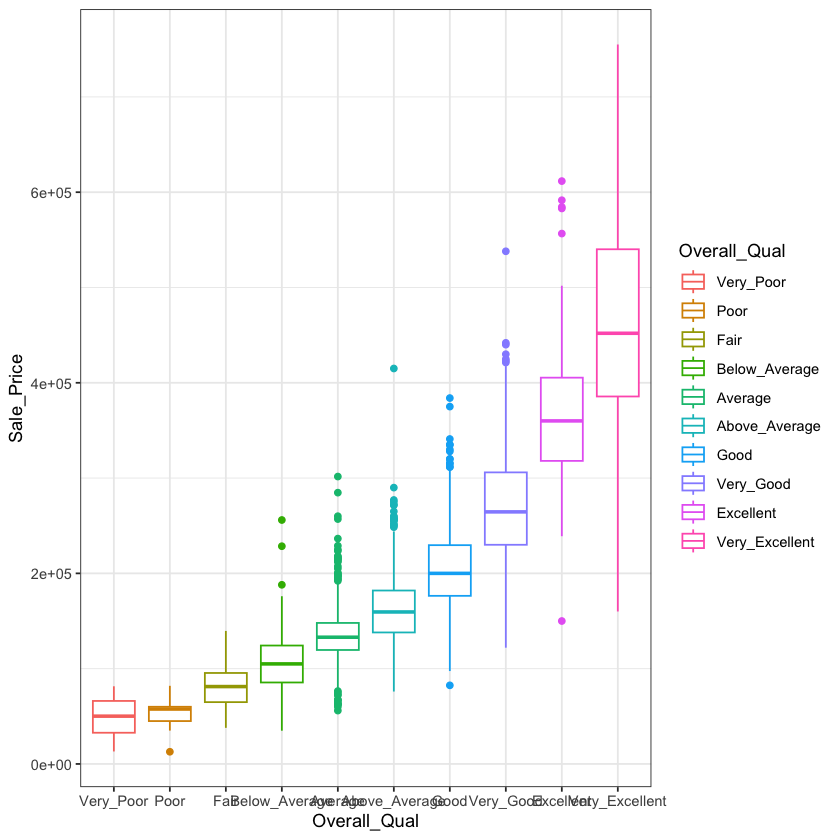
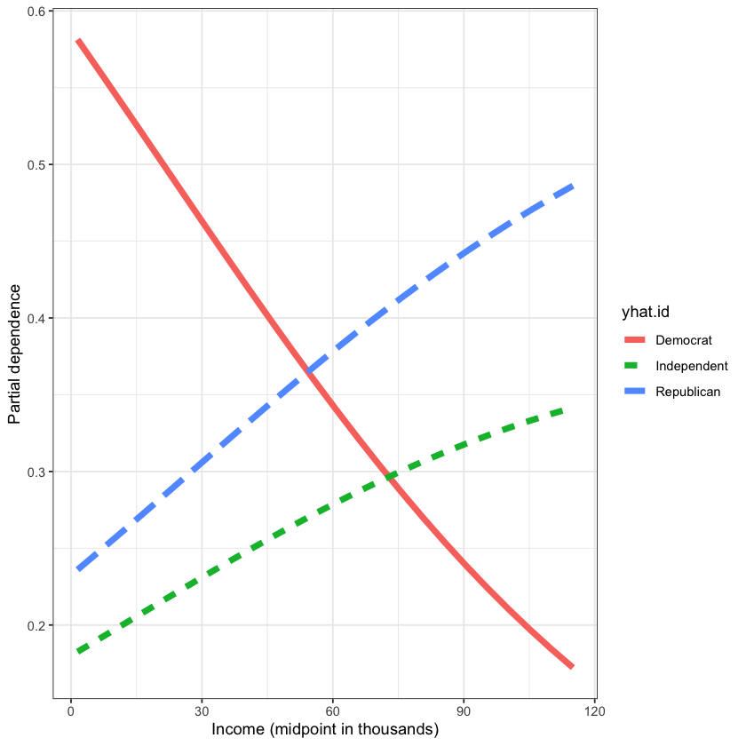
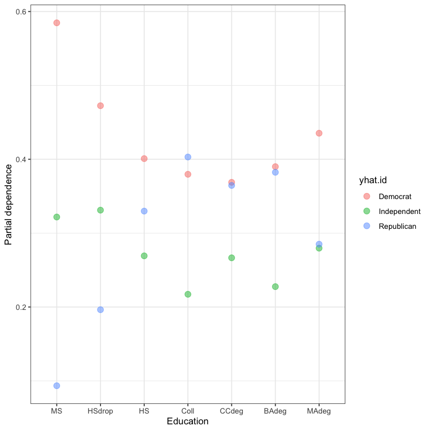
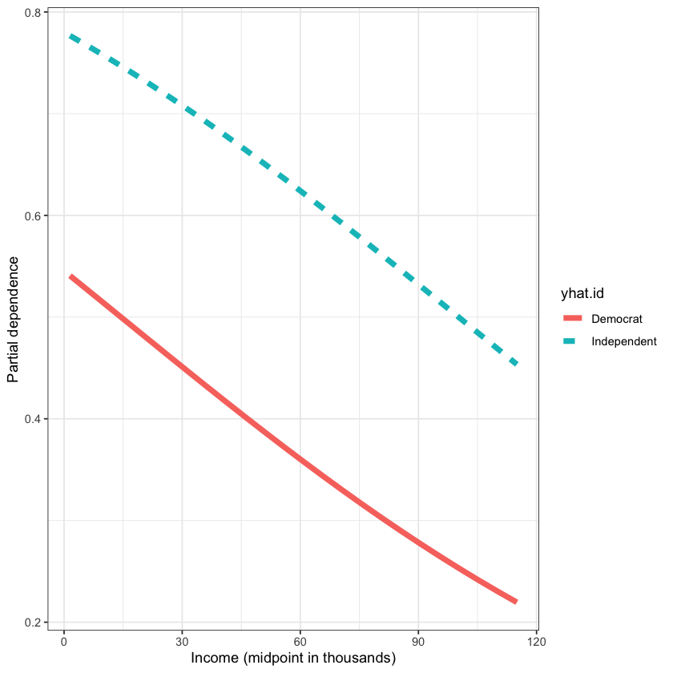
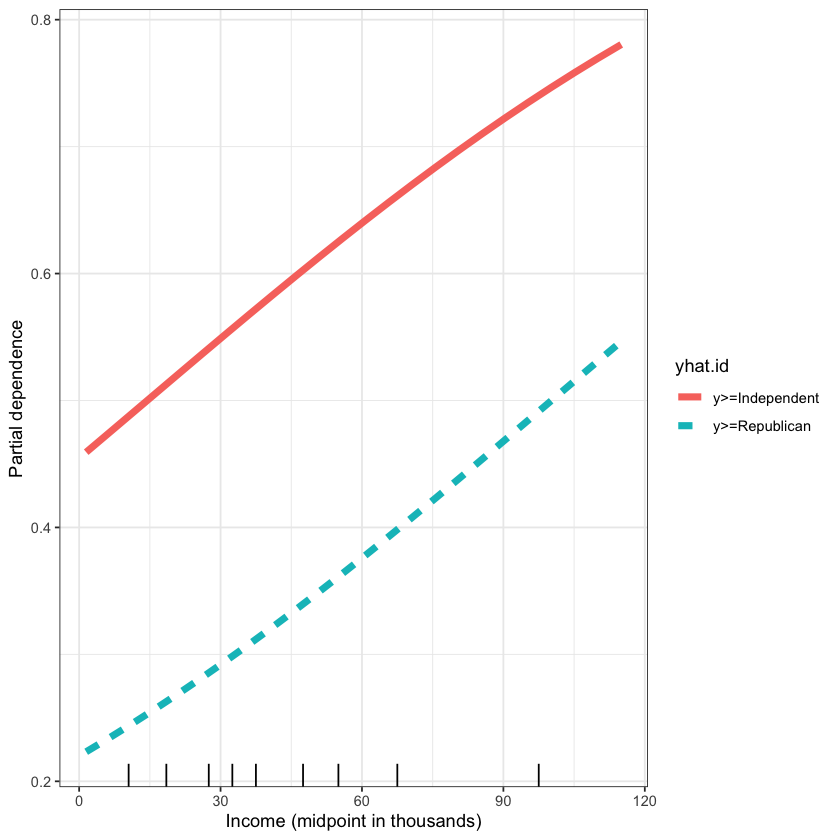

# Install required package(s)
pkgs <- c("AmesHousing", "dplyr", "faraway", "ggplot2", "MASS", "nnet", "ordinal", "rms", "VGAM")
lib <- installed.packages()[, "Package"]
install.packages(setdiff(pkgs, lib))Install required packages
Load some useful packages
library(dplyr) # for data wrangling
library(ggplot2) # for plotting
# Set ggplot2 theme for the notebook
theme_set(theme_bw())Data exploration
In the code chunk below, we’ll load data from the US 1996 national election study and take a peek at the first few rows:
# Load 10 variable subset of US 1996 National Election Study
data(nes96, package = "faraway")
# Print first few rows
head(nes96, n = 10)| popul | TVnews | selfLR | ClinLR | DoleLR | PID | age | educ | income | vote | |
|---|---|---|---|---|---|---|---|---|---|---|
| <int> | <int> | <ord> | <ord> | <ord> | <ord> | <int> | <ord> | <ord> | <fct> | |
| 1 | 0 | 7 | extCon | extLib | Con | strRep | 36 | HS | $3Kminus | Dole |
| 2 | 190 | 1 | sliLib | sliLib | sliCon | weakDem | 20 | Coll | $3Kminus | Clinton |
| 3 | 31 | 7 | Lib | Lib | Con | weakDem | 24 | BAdeg | $3Kminus | Clinton |
| 4 | 83 | 4 | sliLib | Mod | sliCon | weakDem | 28 | BAdeg | $3Kminus | Clinton |
| 5 | 640 | 7 | sliCon | Con | Mod | strDem | 68 | BAdeg | $3Kminus | Clinton |
| 6 | 110 | 3 | sliLib | Mod | Con | weakDem | 21 | Coll | $3Kminus | Clinton |
| 7 | 100 | 7 | sliCon | Con | Mod | weakDem | 77 | Coll | $3Kminus | Clinton |
| 8 | 31 | 1 | sliCon | Mod | sliCon | indRep | 21 | Coll | $3Kminus | Clinton |
| 9 | 180 | 7 | Mod | Con | sliLib | indind | 31 | Coll | $3Kminus | Clinton |
| 10 | 2800 | 0 | sliLib | sliLib | extCon | strDem | 39 | HS | $3Kminus | Clinton |
Let’s use the str() function to print a more useful summary of the str()ucture of this data set:
str(nes96)'data.frame': 944 obs. of 10 variables:
$ popul : int 0 190 31 83 640 110 100 31 180 2800 ...
$ TVnews: int 7 1 7 4 7 3 7 1 7 0 ...
$ selfLR: Ord.factor w/ 7 levels "extLib"<"Lib"<..: 7 3 2 3 5 3 5 5 4 3 ...
$ ClinLR: Ord.factor w/ 7 levels "extLib"<"Lib"<..: 1 3 2 4 6 4 6 4 6 3 ...
$ DoleLR: Ord.factor w/ 7 levels "extLib"<"Lib"<..: 6 5 6 5 4 6 4 5 3 7 ...
$ PID : Ord.factor w/ 7 levels "strDem"<"weakDem"<..: 7 2 2 2 1 2 2 5 4 1 ...
$ age : int 36 20 24 28 68 21 77 21 31 39 ...
$ educ : Ord.factor w/ 7 levels "MS"<"HSdrop"<..: 3 4 6 6 6 4 4 4 4 3 ...
$ income: Ord.factor w/ 24 levels "$3Kminus"<"$3K-$5K"<..: 1 1 1 1 1 1 1 1 1 1 ...
$ vote : Factor w/ 2 levels "Clinton","Dole": 2 1 1 1 1 1 1 1 1 1 ...Note that some of the factors are “ordered” by default; for example, take a look at the educ variable (respondent’s education level):
table(nes96$educ)
MS HSdrop HS Coll CCdeg BAdeg MAdeg
13 52 248 187 90 227 127 Same goes for PID (respondent’s party identification) and income. Does it make sense for these variables to be treated as ordinal?
table(nes96$PID)
table(nes96$income)
strDem weakDem indDem indind indRep weakRep strRep
200 180 108 37 94 150 175
$3Kminus $3K-$5K $5K-$7K $7K-$9K $9K-$10K $10K-$11K $11K-$12K
19 12 17 19 18 13 11
$12K-$13K $13K-$14K $14K-$15K $15K-$17K $17K-$20K $20K-$22K $22K-$25K
17 10 15 23 35 26 39
$25K-$30K $30K-$35K $35K-$40K $40K-$45K $45K-$50K $50K-$60K $60K-$75K
68 70 62 48 51 100 103
$75K-$90K $90K-$105K $105Kplus
53 47 68 In the next code chunk, we’ll clean up the data a bit by:
- condensing
PIDinto a new variable (party) iwht only three categories; - convert
incometo numeric by taking the midpoint of each bin (is this a reasonable thing to do?); - create a new data frame with the variables of interest.
# Condense party identification (PID) column into three categories
party <- nes96$PID
levels(party) <- c(
"Democrat", "Democrat",
"Independent", "Independent", "Independent",
"Republican", "Republican"
)
# Convert income to numeric
inca <- c(1.5, 4, 6, 8, 9.5, 10.5, 11.5, 12.5, 13.5, 14.5, 16, 18.5, 21, 23.5,
27.5, 32.5, 37.5, 42.5, 47.5, 55, 67.5, 82.5, 97.5, 115)
income <- inca[unclass(nes96$income)]
# Construct new data set for analysis
rnes96 <- data.frame(
"party" = party,
"income" = income,
"education" = nes96$educ,
"age" = nes96$age
)
# Print summary of data set
str(rnes96)'data.frame': 944 obs. of 4 variables:
$ party : Ord.factor w/ 3 levels "Democrat"<"Independent"<..: 3 1 1 1 1 1 1 2 2 1 ...
$ income : num 1.5 1.5 1.5 1.5 1.5 1.5 1.5 1.5 1.5 1.5 ...
$ education: Ord.factor w/ 7 levels "MS"<"HSdrop"<..: 3 4 6 6 6 4 4 4 4 3 ...
$ age : int 36 20 24 28 68 21 77 21 31 39 ...The next couple of code blocks try to visualize party affiliation by education level and income.
# Aggregate data; what's happening here?
egp <- group_by(rnes96, education, party) %>%
summarise(count = n()) %>%
group_by(education) %>%
mutate(etotal = sum(count), proportion = count/etotal)
# Plot results
ggplot(egp, aes(x = education, y = proportion, group = party,
linetype = party, color = party)) +
geom_line(size = 2)`summarise()` has grouped output by 'education'. You can override using the `.groups` argument.

# Aggregate data; what's happening here?
igp <- mutate(rnes96, incomegp = cut_number(income, 7)) %>%
group_by(incomegp, party) %>%
summarise(count = n()) %>%
group_by(incomegp) %>%
mutate(etotal = sum(count), proportion = count / etotal)
# Plot results
ggplot(igp, aes(x = incomegp, y =proportion, group =party,
linetype = party, color = party)) +
geom_line(size = 2)`summarise()` has grouped output by 'incomegp'. You can override using the `.groups` argument.

Multinomial logistic model
Define the following probabilities:
- \(p_{d} = P\left(\text{voting democrat}\right)\);
- \(p_{i} = P\left(\text{voting independent}\right)\);
- \(p_{r} = P\left(\text{voting republican}\right)\),
where \(p_d + p_i + p_r = 1\). Assume for now that income is the only independent variable of interest. The multinomial logit model effectively fits several logits (one for every class except the baseline, which is arbitrary; here, it’s democrat):
- \(\log\left(p_{i} / p_{d}\right) = \beta_0 + \beta_1 \mathtt{income}\quad\) (log odds of voting independent vs. democrat);
- \(\log\left(p_{r} / p_{d}\right) = \alpha_0 + \alpha_1 \mathtt{income}\quad\) (log odds of voting republican vs. democrat).
Here we use \(\beta_i\) and \(\alpha_i\) to remind us that the estimated coefficients between the two models will be different.
This is somewhat similar to fitting two seperate logit (i.e., logistic regresison) models; akin to a one-vs-one aproach. Hence, seperate coefficient estimates for each. For. \(J\) classes, we would effectively have \(J - 1\) seperate logit models (i.e., sets of different coefficients).
Below, we use the nnet package in R to fit a multinomial logit model to the rnes96 data.
library(nnet) # for multinom() and polr() functions
# Fit multinomial log-linear model; see ?nnet::multinom for details
(fit.multi <- multinom(party ~ age + education + income, data = rnes96))# weights: 30 (18 variable)
initial value 1037.090001
iter 10 value 990.568608
iter 20 value 984.319052
final value 984.166272
convergedCall:
multinom(formula = party ~ age + education + income, data = rnes96)
Coefficients:
(Intercept) age education.L education.Q education.C
Independent -1.197260 0.0001534525 0.06351451 -0.1217038 0.1119542
Republican -1.642656 0.0081943691 1.19413345 -1.2292869 0.1544575
education^4 education^5 education^6 income
Independent -0.07657336 0.1360851 0.15427826 0.01623911
Republican -0.02827297 -0.1221176 -0.03741389 0.01724679
Residual Deviance: 1968.333
AIC: 2004.333 # Fit multinomial log-linear model with education as a nominal factor
rnes96_2 <- rnes96
rnes96_2$education <- factor(rnes96_2$education, ordered = FALSE)
multinom(party ~ age + education + income, data = rnes96_2)# weights: 30 (18 variable)
initial value 1037.090001
iter 10 value 990.364722
iter 20 value 984.508641
final value 984.166272
convergedCall:
multinom(formula = party ~ age + education + income, data = rnes96_2)
Coefficients:
(Intercept) age educationHSdrop educationHS educationColl
Independent -1.373895 0.0001539014 0.2704482 0.2458744 0.09119446
Republican -3.048576 0.0081945031 0.9876547 1.6915600 1.95336096
educationCCdeg educationBAdeg educationMAdeg income
Independent 0.3269554 0.1082654 0.1933497 0.01623914
Republican 1.8835335 1.8708213 1.4539589 0.01724696
Residual Deviance: 1968.333
AIC: 2004.333 What happened to educucation, and why did it not get dummy encoded?
Brief (non-math) digression into orthogonal polynomial encoding
Orthogonal polynomial (OP) encoding for factors helps look for the linear, quadratic, and cubic trends in the categorical variable of interest (see plots below). Note that OP encoding should only be used with an ordinal variable in which the levels are equally spaced (e.g., income or education).
ames <- AmesHousing::make_ames()
ggplot(ames, aes(x = Overall_Qual, y = Sale_Price)) +#log(Sale_Price))) +
geom_boxplot(aes(color = Overall_Qual))
summary(lm(log(Sale_Price) ~ Overall_Qual, data = ames))ames.ord <- AmesHousing::make_ordinal_ames()
summary(lm(log(Sale_Price) ~ Overall_Qual, data = ames.ord))# What if we ignore the log scale?
ggplot(ames, aes(x = Overall_Qual, y = Sale_Price)) +
geom_boxplot(aes(color = Overall_Qual))
summary(lm(Sale_Price ~ Overall_Qual, data = ames))
summary(lm(Sale_Price ~ Overall_Qual, data = ames.ord))End digression…
summary(fit.multi) # no p-values here# How do we interpret the coefficients? For example, (all else held constant) for every one-unit increase
# in income, the multinomial log odds of voting republican, relative to democrat,
# increase by 0.003.
#
# Gross...
#
# Effect plots to the rescue!library(pdp) # for partial dependence (PD) plots
# Compute partial dependence of party identification on income
pfun <- function(object, newdata) {
probs <- predict(object, newdata = newdata, type = "probs")
colMeans(probs) # return
}
pd.inc <- partial(fit.multi, pred.var = "income", pred.fun = pfun)
ggplot(pd.inc, aes(x = income, y = yhat, linetype = yhat.id, color = yhat.id)) +
geom_line(size = 2) +
xlab("Income (midpoint in thousands)") +
ylab("Partial dependence")
# Try stepwise; since the model is based on a (multinomial) likelihood, the AIC/BIC
# are well-defined and the usual stepwise procedures are still valid
MASS::stepAIC(fit.multi, direction = "both", scope = list("upper" = ~.^2))Start: AIC=2004.33
party ~ age + education + income
# weights: 27 (16 variable)
initial value 1037.090001
iter 10 value 988.896864
iter 20 value 985.822223
final value 985.812737
converged
# weights: 12 (6 variable)
initial value 1037.090001
iter 10 value 992.269502
final value 992.269484
converged
# weights: 27 (16 variable)
initial value 1037.090001
iter 10 value 1009.025560
iter 20 value 1006.961593
final value 1006.955275
converged
# weights: 48 (30 variable)
initial value 1037.090001
iter 10 value 1004.992102
iter 20 value 981.097880
iter 30 value 974.672766
iter 40 value 974.632373
iter 40 value 974.632372
iter 40 value 974.632372
final value 974.632372
converged
# weights: 33 (20 variable)
initial value 1037.090001
iter 10 value 989.133986
iter 20 value 983.452423
final value 983.369209
converged
# weights: 48 (30 variable)
initial value 1037.090001
iter 10 value 1002.858283
iter 20 value 980.366035
iter 30 value 976.643913
final value 976.619912
converged
Df AIC
- education 12 1996.5
- age 2 2003.6
<none> 2004.3
+ age:income 2 2006.7
+ age:education 12 2009.3
+ education:income 12 2013.2
- income 2 2045.9
# weights: 12 (6 variable)
initial value 1037.090001
iter 10 value 992.269502
final value 992.269484
converged
Step: AIC=1996.54
party ~ age + income
# weights: 9 (4 variable)
initial value 1037.090001
final value 992.712152
converged
# weights: 9 (4 variable)
initial value 1037.090001
final value 1020.425203
converged
# weights: 30 (18 variable)
initial value 1037.090001
iter 10 value 990.568608
iter 20 value 984.319052
final value 984.166272
converged
# weights: 15 (8 variable)
initial value 1037.090001
iter 10 value 992.613103
final value 991.418362
converged
Df AIC
- age 2 1993.4
<none> 1996.5
+ age:income 2 1998.8
+ education 12 2004.3
- income 2 2048.8
# weights: 9 (4 variable)
initial value 1037.090001
final value 992.712152
converged
Step: AIC=1993.42
party ~ income
# weights: 6 (2 variable)
initial value 1037.090001
final value 1020.636052
converged
# weights: 12 (6 variable)
initial value 1037.090001
iter 10 value 992.269502
final value 992.269484
converged
# weights: 27 (16 variable)
initial value 1037.090001
iter 10 value 988.896864
iter 20 value 985.822223
final value 985.812737
converged
Df AIC
<none> 1993.4
+ age 2 1996.5
+ education 12 2003.6
- income 2 2045.3Call:
multinom(formula = party ~ income, data = rnes96)
Coefficients:
(Intercept) income
Independent -1.1749331 0.01608683
Republican -0.9503591 0.01766457
Residual Deviance: 1985.424
AIC: 1993.424 # Look at predicted probabilities
head(predict(fit.multi, type = "probs"))| Democrat | Independent | Republican | |
|---|---|---|---|
| 1 | 0.5923052 | 0.1975326 | 0.2101622 |
| 2 | 0.5919378 | 0.1687055 | 0.2393567 |
| 3 | 0.5970789 | 0.1732058 | 0.2297154 |
| 4 | 0.5924809 | 0.1719775 | 0.2355417 |
| 5 | 0.5423563 | 0.1583973 | 0.2992464 |
| 6 | 0.5907590 | 0.1683954 | 0.2408456 |
proportions(table(rnes96$party))# Construct partial dependence of party affiliation on education
pd.edu <- partial(fit.multi, pred.var = "education", pred.fun = pfun)
head(pd.edu)
ggplot(pd.edu, aes(x = education, y = yhat, linetype = yhat.id, color = yhat.id)) +
geom_point(size = 3, alpha = 0.5) +
xlab("Education") +
ylab("Partial dependence") | education | yhat | yhat.id | |
|---|---|---|---|
| <ord> | <dbl> | <chr> | |
| 1 | MS | 0.5847048 | Democrat |
| 2 | HSdrop | 0.4725179 | Democrat |
| 3 | HS | 0.4009031 | Democrat |
| 4 | Coll | 0.3796768 | Democrat |
| 5 | CCdeg | 0.3688061 | Democrat |
| 6 | BAdeg | 0.3900266 | Democrat |

# Can perform classification, if desired (insert eyeroll emoji...)
table("Predicted" = predict(fit.multi), "Actual" = rnes96$party)
# Ummm...majority of actual Republicans are classified as Democrats Actual
Predicted Democrat Independent Republican
Democrat 277 130 169
Independent 4 7 5
Republican 99 102 151# For comparison, fit a (default) random forest (RF); see
# ?randomForest::randomForest for additional details
set.seed(2008) # for reproducibility
(fit.rfo <- randomForest::randomForest(party ~ ., data = rnes96, ntree = 1000))# Construct the same PD plot as before, but using the RF model
pd.rfo <- partial(fit.rfo, pred.var = "income", pred.fun = function(object, newdata) {
colMeans(predict(object, newdata = newdata, type = "prob"))
})
ggplot(pd.rfo, aes(x = income, y = yhat, linetype = yhat.id, color = yhat.id)) +
geom_line(size = 2) +
xlab("Income (midpoint in thousands)") +
ylab("Partial dependence") +
geom_rug(data = data.frame("income" = quantile(rnes96$income, prob = 1:9/10)),
aes(x = income), inherit.aes = FALSE)Proportional odds cummulative logit model
For an ordered outcome with \(J\) categories \(1 < 2 < 3 < \cdots < J\), the proportional odds cummulative logit (PO, for short) models fits a logit-type model using the cumulative probabilities. For brevity, let
- \(p_{\le j} = P\left(Y \le j | \boldsymbol{x}\right)\);
- \(p_{> j} = P\left(Y > j | \boldsymbol{x}\right)\).
The PO model uses the following logit:
\(\log\left(\frac{p_{\le j}}{p_{>j}}\right) = \alpha_j + \boldsymbol{x}^\top\boldsymbol{\beta}\).
It’s worth noting that for the non-proportional odds cummulative logit (NPO, for short) model:
\(\log\left(\frac{p_{\le j}}{p_{>j}}\right) = \alpha_j + \boldsymbol{x}^\top\boldsymbol{\beta}_j\).
That is, in the NPO model, the \(\beta\) coefficients depend on \(j\). In short, the PO model has a simpler form since only the inetrcepts are allowed to vary (hence, proportional odds assumption).
###############################################################################
#
# Modeling ordinal data using the proportional odds (PO) model
#
# Reference: https://journal.r-project.org/archive/2018/RJ-2018-004/RJ-2018-004.pdf
#
###############################################################################library(MASS) # for polr() function; already loaded but listed here again
# The following packages offer similar functionality
#library(rms)
#library(ordinal)
#library(VGAM) # used in Dr. Liu's slides and videos
# This is the log odds of category k or less, and since these are log odds
# which differ only by a constant for different k, the odds are proportional.
# Hence the term proportional odds logistic regression.
# Fit a proportional odds logistic regression
(fit.polr <- polr(party ~ age + education + income, data = rnes96))
Attaching package: ‘MASS’
The following object is masked from ‘package:dplyr’:
select
Call:
polr(formula = party ~ age + education + income, data = rnes96)
Coefficients:
age education.L education.Q education.C education^4 education^5
0.005774902 0.724086814 -0.781360508 0.040168238 -0.019925492 -0.079412657
education^6 income
-0.061103738 0.012738693
Intercepts:
Democrat|Independent Independent|Republican
0.6448794 1.7373541
Residual Deviance: 1984.211
AIC: 2004.211 # Predicted (non-cumulative) probabilities
head(predict(fit.polr, newdata = rnes96, type = "probs"))| Democrat | Independent | Republican | |
|---|---|---|---|
| 1 | 0.5673361 | 0.2289862 | 0.2036777 |
| 2 | 0.5346171 | 0.2394053 | 0.2259776 |
| 3 | 0.5428780 | 0.2369062 | 0.2202158 |
| 4 | 0.5371401 | 0.2386517 | 0.2242082 |
| 5 | 0.4794712 | 0.2536103 | 0.2669185 |
| 6 | 0.5331800 | 0.2398307 | 0.2269893 |
Interpreting the coefficients

Take a look at Table 2 in this paper. Once you know which parameterization your software uses for the PO/NPO model, then you should be able to interpret the coefficient estimates in the right direction.
# One interprets the effects in the PO model using ordinary odds ratios. The
# difference is that a single odds ratio is assumed to apply equally to *all*
# events Y<=j (or Y>=j, depending on software), j=1,2,...,k. If linearity and additivity hold, exp(beta_m) is
# the odds of Y<=j (regardless of j) for every one-unit increase in X_m.# Just look at effect plots...
pfun <- function(object, newdata) {
probs <- predict(object, newdata = newdata, type = "probs") # individual probs
cprobs <- t(apply(probs[, 1:2], MARGIN = 1, FUN = cumsum)) # cumulative probs
colMeans(cprobs) # return averaged predicted probs for each class
}
pd.inc <- partial(fit.polr, pred.var = "income", pred.fun = pfun)
ggplot(pd.inc, aes(x = income, y = yhat, linetype = yhat.id, color = yhat.id)) +
geom_line(size = 2) +
xlab("Income (midpoint in thousands)") +
ylab("Partial dependence")
# Try stepwise
stepAIC(fit.polr, direction = "both")Start: AIC=2004.21
party ~ age + education + income
Df AIC
- education 6 2002.8
<none> 2004.2
- age 1 2004.4
- income 1 2038.6
Step: AIC=2002.83
party ~ age + income
Df AIC
- age 1 2001.4
<none> 2002.8
+ education 6 2004.2
- income 1 2047.2
Step: AIC=2001.36
party ~ income
Df AIC
<none> 2001.4
+ age 1 2002.8
+ education 6 2004.4
- income 1 2045.3Call:
polr(formula = party ~ income, data = rnes96)
Coefficients:
income
0.01311984
Intercepts:
Democrat|Independent Independent|Republican
0.2091045 1.2915566
Residual Deviance: 1995.363
AIC: 2001.363 library(VGAM) # for vglm() function
# Fit different models; some of these are the same, but use a different
# parameterization...
(fit1 <- vglm(party ~ age + education + income, # uses P(Y <= j),
family = propodds(reverse = FALSE), data = rnes96))
(fit2 <- vglm(formula = party ~ age + education + income, # same as above, but uses P(Y >= j)
family = propodds(reverse = TRUE), data = rnes96))
(fit3 <- vglm(formula = party ~ age + education + income,
family = cumulative(parallel = TRUE), data = rnes96))
(fit4 <- vglm(formula = party ~ age + education + income, # same as above (and with polr())
family = cumulative(parallel = FALSE), data = rnes96))# A basic assumption of all commonly used ordinal regression models is that
# the response variable behaves in an ordinal fashion. # ?rms::plot.xmean.ordinaly
#
# Separately for each predictor variable X in a formula, plots the mean of X
# vs. levels of Y. Then under the proportional odds assumption, the expected
# value of the predictor for each Y value is also plotted (as a dotted line).
# This plot is useful for assessing the ordinality assumption for Y separately
# for each X, and for assessing the proportional odds assumption in a simple
# univariable way. If several predictors do not distinguish adjacent categories
# of Y, those levels may need to be pooled. This display assumes that each
# predictor is linearly related to the log odds of each event in the
# proportional odds model. There is also an option to plot the expected means
# assuming a forward continuation ratio model.
library(rms)
# plot mean of each x vs. ordinal y (assumes each x is linearly related to y)
rms::plot.xmean.ordinaly(party ~ age + education + income, data = rnes96)Loading required package: Hmisc
Attaching package: ‘Hmisc’
The following objects are masked from ‘package:dplyr’:
src, summarize
The following objects are masked from ‘package:base’:
format.pval, units

# Fit model the PO model using rms package
#options()$contrasts
(fit.orm <- orm(party ~ age + education + income, data = rnes96))ERROR: Error in Design(X, formula = formula): Variable education is an ordered factor with non-numeric levels.
You should set options(contrasts=c("contr.treatment", "contr.treatment"))
or rms will not work properly.
Error in Design(X, formula = formula): Variable education is an ordered factor with non-numeric levels.
You should set options(contrasts=c("contr.treatment", "contr.treatment"))
or rms will not work properly.
Traceback:
1. orm(party ~ age + education + income, data = rnes96)
2. Design(X, formula = formula)
3. stop(paste("Variable", nam, "is an ordered factor with non-numeric levels.\n",
. "You should set options(contrasts=c(\"contr.treatment\", \"contr.treatment\"))\nor rms will not work properly."))# WTF?
#
# Fine...
options(contrasts = c("contr.treatment", "contr.treatment")) # I guess rms does not like ordered factors...
# Refit the model and treat all categorical variables as nominal
(fit.orm <- orm(party ~ age + education + income, data = rnes96))Logistic (Proportional Odds) Ordinal Regression Model
orm(formula = party ~ age + education + income, data = rnes96)
Model Likelihood Discrimination Rank Discrim.
Ratio Test Indexes Indexes
Obs 944 LR chi2 57.06 R2 0.066 rho 0.245
Democrat 380 d.f. 8 R2(8,944) 0.051
Independent 239 Pr(> chi2) <0.0001 R2(8,828.6) 0.057
Republican 325 Score chi2 56.58 |Pr(Y>=median)-0.5| 0.116
Distinct Y 3 Pr(> chi2) <0.0001
Median Y 2
max |deriv| 0.0002
Coef S.E. Wald Z Pr(>|Z|)
y>=Independent -1.4963 0.6503 -2.30 0.0214
y>=Republican -2.5887 0.6537 -3.96 <0.0001
age 0.0058 0.0039 1.49 0.1372
education=HSdrop 0.5828 0.6464 0.90 0.3673
education=HS 0.9983 0.6079 1.64 0.1005
education=Coll 1.2230 0.6138 1.99 0.0463
education=CCdeg 1.1525 0.6312 1.83 0.0679
education=BAdeg 1.1666 0.6155 1.90 0.0580
education=MAdeg 0.8365 0.6255 1.34 0.1811
income 0.0127 0.0021 5.95 <0.0001 # Exponentiating gives the multiplicative increase to P(Y>j|x), for j=Dem<Mod<Rep
exp(coef(fit.orm))For example, for every “midpoint increase” in income, the odds of voting republican or independent over democrat increase by 1.3%.
# More options when requesting predictions from an ordinal regression model
head(p1 <- predict(fit.orm, type = "fitted")) # cumulative probabilities
head(p2 <- predict(fit.orm, type = "fitted.ind")) # individual probabilities| y>=Independent | y>=Republican | |
|---|---|---|
| 1 | 0.4326639 | 0.2036775 |
| 2 | 0.4653843 | 0.2259784 |
| 3 | 0.4571215 | 0.2202153 |
| 4 | 0.4628592 | 0.2242075 |
| 5 | 0.5205267 | 0.2669167 |
| 6 | 0.4668214 | 0.2269900 |
| party=Democrat | party=Independent | party=Republican | |
|---|---|---|---|
| 1 | 0.5673361 | 0.2289864 | 0.2036775 |
| 2 | 0.5346157 | 0.2394059 | 0.2259784 |
| 3 | 0.5428785 | 0.2369062 | 0.2202153 |
| 4 | 0.5371408 | 0.2386517 | 0.2242075 |
| 5 | 0.4794733 | 0.2536101 | 0.2669167 |
| 6 | 0.5331786 | 0.2398313 | 0.2269900 |
# Let's make a simple feature effect (e.g., a partial dependence) plot
pfun.orm <- function(object, newdata) {
colMeans(predict(object, newdata = newdata, type = "fitted"))
}
pd.income <- partial(fit.orm, pred.var = "income", pred.fun = pfun.orm)
ggplot(pd.income, aes(x = income, y = yhat, linetype = yhat.id, color = yhat.id)) +
geom_line(size = 2) +
xlab("Income (midpoint in thousands)") +
ylab("Partial dependence") +
geom_rug(data = data.frame("income" = quantile(rnes96$income, prob = 1:9/10)),
aes(x = income), inherit.aes = FALSE)